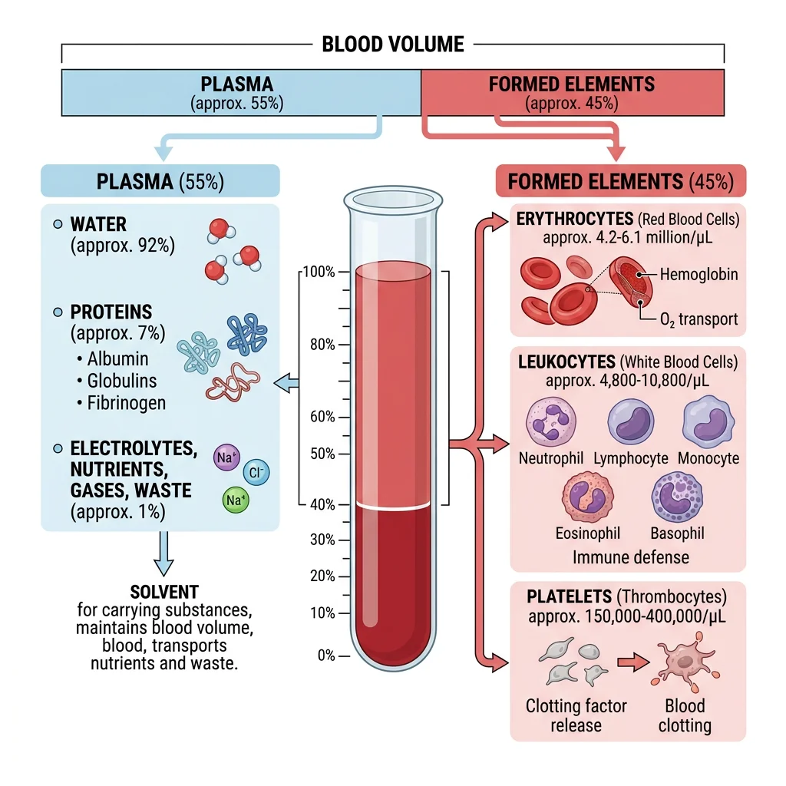
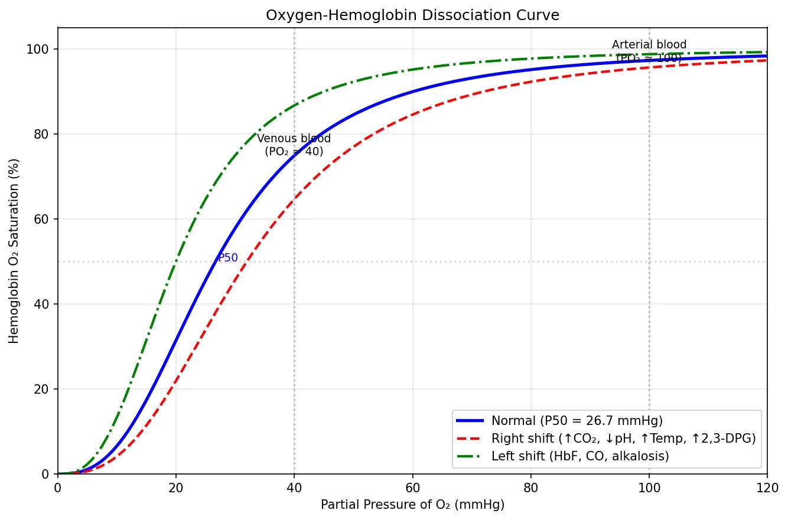
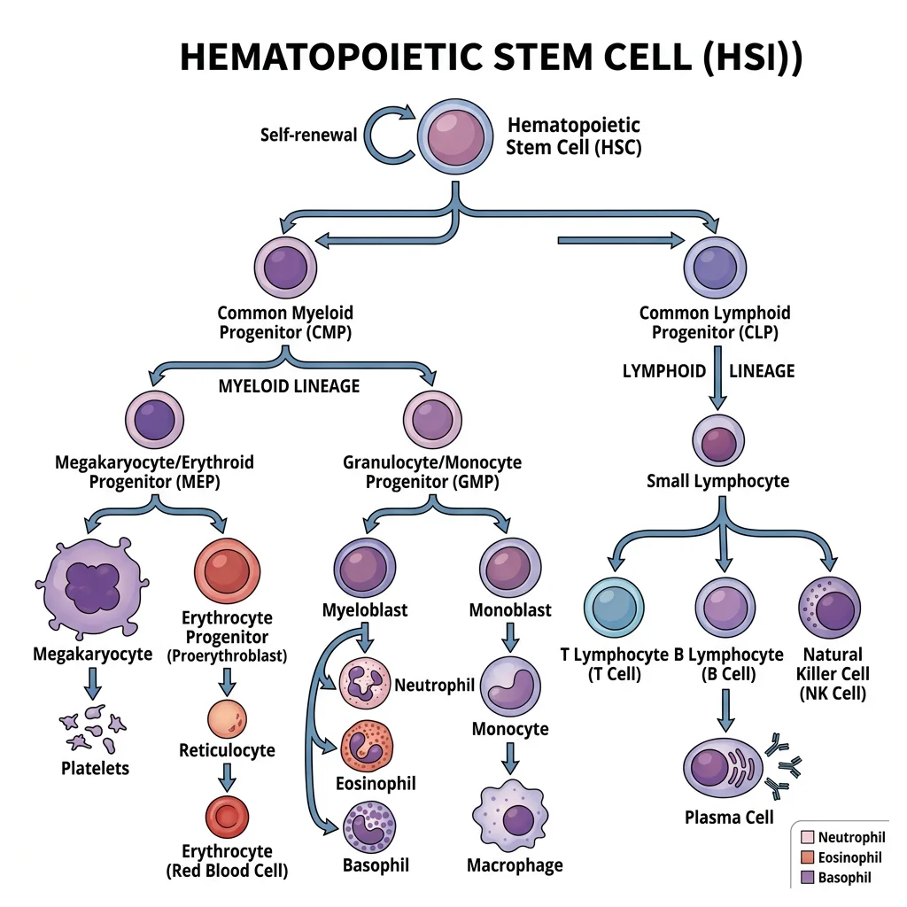
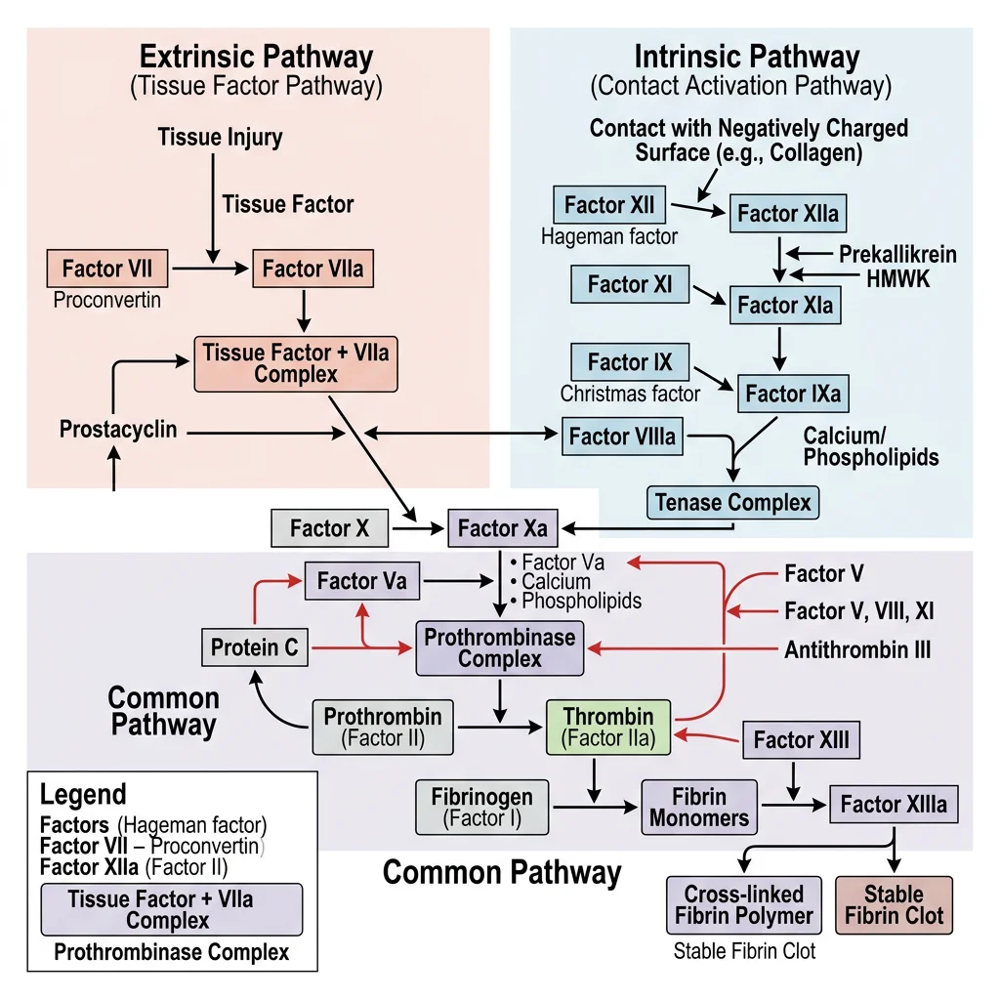
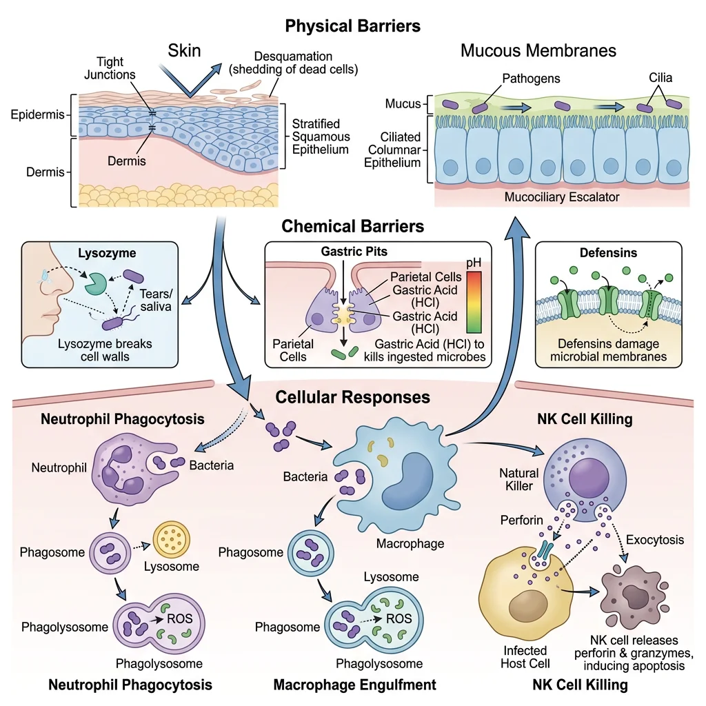
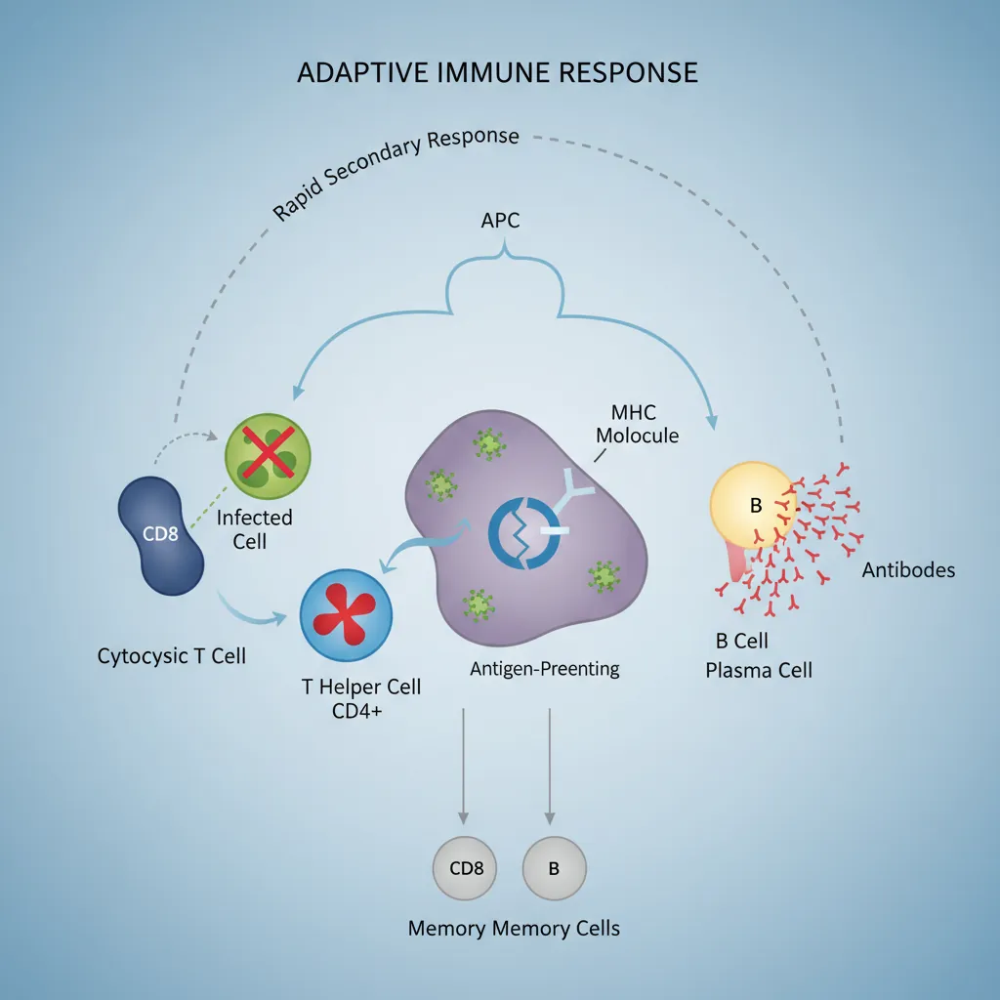
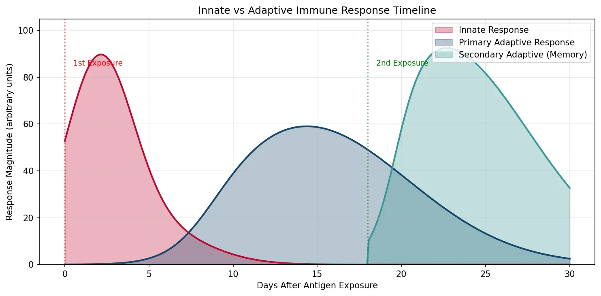

Physiology Mastery
Homeostasis & Feedback
Set points, feedback loops, allostasisNeurophysiology & Action Potentials
Neurons, action potentials, synapsesCardiac Electrophysiology & Hemodynamics
Heart rhythm, hemodynamics, cardiac outputRespiratory Mechanics & Gas Exchange
Breathing mechanics, gas exchange, V/QRenal Physiology & Fluid Balance
Nephron function, filtration, acid-baseGI Physiology & Absorption
Motility, secretion, nutrient absorptionEndocrine Regulation & Metabolism
Hormones, thyroid, adrenal, metabolismExercise Physiology & Adaptation
Acute responses, training adaptationsCellular & Membrane Physiology
Ion transport, signaling, second messengersBlood & Immune Physiology
Hematopoiesis, coagulation, immunityReproductive & Developmental
Reproduction, pregnancy, fetal physiologyIntegrative & Clinical Physiology
Stress, shock, sepsis, agingBlood Composition & Function
Blood is the body's liquid connective tissue — approximately 5 litres in an average adult, constituting ~7-8% of body weight. It performs three broad categories of function: transport (O₂, CO₂, nutrients, hormones, waste), regulation (pH buffering, temperature distribution, osmotic balance), and protection (clotting to prevent blood loss, immune defense against pathogens). Blood consists of two phases: plasma (~55%) and formed elements (~45% — erythrocytes, leukocytes, and platelets).

Plasma Components
Plasma is the straw-coloured fluid matrix of blood — 91% water, 7% proteins, and 2% other solutes. When clotting factors are removed, plasma becomes serum. The major plasma proteins are synthesised primarily by the liver:
| Protein | Concentration | Function | Clinical Significance |
|---|---|---|---|
| Albumin | 3.5–5.0 g/dL (~60%) | Oncotic pressure (~80%), transport carrier (bilirubin, fatty acids, drugs, hormones), pH buffer | ↓ in liver disease, nephrotic syndrome, malnutrition → oedema (↓ oncotic pressure) |
| Globulins | 2.0–3.5 g/dL (~35%) | α₁/α₂: transport (haptoglobin, ceruloplasmin, transferrin); β: transport (LDL, transferrin); γ: immunoglobulins (antibodies) | α₁-antitrypsin deficiency → emphysema; multiple myeloma → monoclonal γ spike |
| Fibrinogen | 200–400 mg/dL (~4%) | Coagulation (converted to fibrin by thrombin); acute phase reactant; ↑ ESR (causes rouleaux formation) | ↓ in DIC (consumed), severe liver disease; ↑ in inflammation |
| Complement | ~0.3 g/dL | Innate immunity — opsonisation (C3b), MAC formation (C5b-9), chemotaxis (C5a) | C3 deficiency → recurrent pyogenic infections; C5-9 deficiency → Neisseria susceptibility |
Erythrocytes & Oxygen Transport
Red blood cells (RBCs) are the most abundant cells in blood (~4.5–5.5 million/µL in males, 4.0–5.0 million in females). They are biconcave discs (~7.5 µm diameter, ~2.5 µm thick at the edge, ~1 µm thick centrally) — a shape that maximises surface-area-to-volume ratio for gas exchange, provides flexibility for navigating capillaries as narrow as 3 µm, and ensures minimal diffusion distance to any haemoglobin molecule within.
Haemoglobin — The Oxygen Carrier
Each RBC contains approximately 280 million haemoglobin molecules. Adult haemoglobin (HbA) is a tetramer of two α and two β globin chains, each cradling a haem group containing a central Fe²⁺ that reversibly binds O₂. The binding exhibits cooperative kinetics described by the sigmoidal oxygen-haemoglobin dissociation curve: binding of the first O₂ molecule increases affinity for subsequent ones (T-state → R-state transition), enabling efficient loading in the lungs (~97% saturation at PO₂ = 100 mmHg) and unloading in tissues (~75% at PO₂ = 40 mmHg).
import numpy as np
import matplotlib.pyplot as plt
# Oxygen-Hemoglobin Dissociation Curve (Hill equation approximation)
po2 = np.linspace(0, 120, 500)
# Hill equation: SO2 = PO2^n / (P50^n + PO2^n)
def oxy_hb_curve(po2, p50, n=2.7):
"""Sigmoidal O2 dissociation curve using Hill equation."""
return 100 * (po2 ** n) / (p50 ** n + po2 ** n)
# Normal curve (P50 = 26.7 mmHg)
normal = oxy_hb_curve(po2, p50=26.7)
# Right-shifted (acidosis, fever, high 2,3-DPG) — P50 increases
right_shift = oxy_hb_curve(po2, p50=32)
# Left-shifted (alkalosis, HbF, CO poisoning) — P50 decreases
left_shift = oxy_hb_curve(po2, p50=20)
fig, ax = plt.subplots(figsize=(9, 6))
ax.plot(po2, normal, 'b-', linewidth=2.5, label='Normal (P50 = 26.7 mmHg)')
ax.plot(po2, right_shift, 'r--', linewidth=2, label='Right shift (↑CO₂, ↓pH, ↑Temp, ↑2,3-DPG)')
ax.plot(po2, left_shift, 'g-.', linewidth=2, label='Left shift (HbF, CO, alkalosis)')
# Mark key physiological points
ax.axvline(x=40, color='gray', linestyle=':', alpha=0.5)
ax.axvline(x=100, color='gray', linestyle=':', alpha=0.5)
ax.annotate('Venous blood\n(PO₂ ≈ 40)', xy=(40, 75), fontsize=9, ha='center')
ax.annotate('Arterial blood\n(PO₂ ≈ 100)', xy=(100, 97), fontsize=9, ha='center')
ax.axhline(y=50, color='gray', linestyle=':', alpha=0.3)
ax.annotate('P50', xy=(27, 50), fontsize=9, color='blue')
ax.set_xlabel('Partial Pressure of O₂ (mmHg)')
ax.set_ylabel('Hemoglobin O₂ Saturation (%)')
ax.set_title('Oxygen-Hemoglobin Dissociation Curve')
ax.legend(loc='lower right')
ax.grid(True, alpha=0.3)
ax.set_ylim(0, 105)
ax.set_xlim(0, 120)
plt.tight_layout()
plt.show()

Leukocytes & Differential Count
White blood cells (WBCs) are the nucleated cells of blood, numbering 4,500–11,000/µL. Unlike RBCs, WBCs use blood as a highway — their real work occurs in the tissues. The differential count reveals the proportions of each WBC type and is among the most commonly ordered laboratory tests:
| Cell Type | Normal Range | % of Total | Primary Function | Elevated In |
|---|---|---|---|---|
| Neutrophils | 2,500–7,000/µL | 60–70% | First responder; phagocytosis of bacteria; NETs (neutrophil extracellular traps) | Bacterial infections, acute inflammation, steroids |
| Lymphocytes | 1,500–4,000/µL | 20–30% | Adaptive immunity — T cells (cellular), B cells (humoral), NK cells | Viral infections, CLL, pertussis |
| Monocytes | 200–800/µL | 3–8% | Tissue macrophages (after emigration); antigen presentation; chronic inflammation | Chronic infections (TB), autoimmune diseases |
| Eosinophils | 100–500/µL | 1–4% | Defense against parasites (helminth worms); modulate allergic responses | Parasitic infections, allergies, asthma, drug reactions |
| Basophils | 20–100/µL | <1% | Release histamine and heparin; amplify allergic responses (IgE binding) | CML (markedly), hypothyroidism, allergic conditions |
Platelets & Megakaryopoiesis
Platelets (thrombocytes) are small, anucleate cell fragments (2–3 µm diameter) derived from giant bone marrow cells called megakaryocytes. Normal count: 150,000–400,000/µL; lifespan ~8–10 days. Each megakaryocyte produces 1,000–3,000 platelets by extending long cytoplasmic processes (proplatelets) into the marrow sinusoids, where shear forces fragment them into individual platelets.
Platelets contain specialised granules that are released upon activation:
- α-granules: Fibrinogen, vWF, platelet factor 4, PDGF, TGF-β — promote adhesion, coagulation, and wound healing
- Dense (δ) granules: ADP, ATP, serotonin (5-HT), Ca²⁺ — amplify platelet activation and recruit more platelets
Thrombopoietin (TPO), produced mainly by the liver, is the primary regulator of megakaryopoiesis. Unlike EPO (which is induced by hypoxia), TPO levels are regulated by mass balance — circulating platelets absorb and destroy TPO, so when platelet count drops, more TPO survives → stimulates marrow → more platelets produced (negative feedback). The TPO receptor agonists romiplostim and eltrombopag are used clinically for refractory immune thrombocytopenia (ITP).
Hematopoiesis
Hematopoiesis — the formation of blood cells — is one of the most prolific processes in the body, producing approximately 200 billion RBCs, 100 billion WBCs, and 100 billion platelets every day. This extraordinary output arises from a tiny population of hematopoietic stem cells (HSCs) in the bone marrow — perhaps 10,000–20,000 long-term HSCs in the entire body — that self-renew and give rise to all blood cell lineages.

Bone Marrow Microenvironment
The bone marrow is a highly specialised niche — the microenvironment that supports HSC maintenance, self-renewal, and controlled differentiation. In adults, active (red) marrow occupies the flat bones (pelvis, sternum, ribs, vertebrae) and proximal ends of long bones, while yellow marrow (fat cells) fills the shafts of long bones (can reactivate in times of haematological stress).
The marrow niche contains:
- Osteoblasts and endosteal cells: Line the bone surface; produce signals (SCF, CXCL12/SDF-1, Notch ligands) that maintain HSC quiescence and self-renewal
- Sinusoidal endothelium: Fenestrated vessels through which mature cells enter the circulation; perivascular stromal cells (CAR cells, leptin receptor⁺ cells) secrete SCF and CXCL12
- Extracellular matrix: Fibronectin, laminin, collagen — provide structural support and adhesion molecules (integrins) for HSC anchoring
- Sympathetic nerves: Regulate HSC mobilisation via circadian signaling (CXCL12 levels oscillate — HSC release peaks at night in humans)
Stem Cell Differentiation
HSCs sit at the apex of a hierarchical differentiation tree. The classical model proposes an early branch point into two major lineages:
- Common Myeloid Progenitor (CMP): Gives rise to erythrocytes, megakaryocytes/platelets, granulocytes (neutrophils, eosinophils, basophils), and monocytes/macrophages
- Common Lymphoid Progenitor (CLP): Gives rise to T lymphocytes (mature in thymus), B lymphocytes (mature in marrow), NK cells, and innate lymphoid cells (ILCs)
The Discovery of Hematopoietic Stem Cells — Till & McCulloch
In 1961, Canadian scientists James Till and Ernest McCulloch performed a landmark experiment: they irradiated mice (destroying their bone marrow) and transplanted marrow from donor mice. In the spleens of irradiated recipients, they observed macroscopic colonies — each arising from a single transplanted cell. These "colony-forming units" (CFU-S) contained cells of multiple lineages (red cells, white cells, megakaryocytes), proving that a single progenitor could give rise to diverse blood cell types — the first functional evidence for stem cells.
Modern HSC biology uses fluorescence-activated cell sorting (FACS) to isolate HSCs by surface markers: in humans, CD34⁺ CD38⁻ CD90⁺ CD45RA⁻ identifies the long-term HSC population used in clinical bone marrow transplantation.
Growth Factors & Cytokines
Each lineage is driven by specific colony-stimulating factors (CSFs) and cytokines — soluble proteins that bind receptors on progenitor cells to promote survival, proliferation, and differentiation:
| Growth Factor | Source | Target Lineage | Clinical Use |
|---|---|---|---|
| EPO (Erythropoietin) | Kidney (peritubular fibroblasts) | Erythroid progenitors (CFU-E, BFU-E) | Recombinant EPO for anaemia of CKD; abused in sports doping |
| TPO (Thrombopoietin) | Liver | Megakaryocytes → platelets | TPO receptor agonists (romiplostim, eltrombopag) for ITP |
| G-CSF | Macrophages, endothelium | Neutrophil precursors | Filgrastim — for chemotherapy-induced neutropenia; HSC mobilisation |
| GM-CSF | T cells, macrophages, endothelium | Granulocytes + monocytes (broad) | Sargramostim — post-transplant marrow recovery |
| M-CSF | Macrophages, fibroblasts | Monocyte/macrophage lineage | Research tool; implicated in tumour-associated macrophage recruitment |
| IL-3 (Multi-CSF) | Activated T cells | Multiple lineages (early progenitor) | Experimental; broad stimulation of hematopoiesis |
| SCF (Stem Cell Factor) | Marrow stromal cells | HSCs (c-Kit receptor) | Combined with other factors in ex vivo HSC expansion protocols |
Erythropoiesis & EPO Regulation
Erythropoiesis — the production of red blood cells — takes approximately 7 days from committed erythroid progenitor to mature circulating RBC. The lineage: HSC → CMP → megakaryocyte-erythrocyte progenitor (MEP) → BFU-E → CFU-E → proerythroblast → basophilic → polychromatic → orthochromatic erythroblast → reticulocyte (nucleus extruded) → mature RBC (loss of ribosomes over 1–2 days in circulation).
EPO regulation is a beautiful oxygen-sensing feedback loop: when the kidney detects hypoxia (↓ PO₂), peritubular interstitial fibroblasts stabilise HIF-2α (hypoxia-inducible factor), which activates the EPO gene → ↑ EPO secretion → stimulates erythroid progenitor survival and proliferation → ↑ RBC production → ↑ O₂ delivery → HIF-2α degraded (via VHL-mediated ubiquitination in normoxia) → EPO returns to baseline. In normoxia, prolyl hydroxylases (PHDs) hydroxylate HIF-2α → recognised by VHL → ubiquitinated → proteasomal degradation.
Hemostasis & Coagulation
Hemostasis — from the Greek haima (blood) and stasis (standing) — is the process that stops bleeding after vascular injury while keeping blood fluid within intact vessels. It involves a precisely orchestrated sequence: vascular spasm → primary hemostasis (platelet plug) → secondary hemostasis (coagulation cascade → fibrin clot) → clot retraction → fibrinolysis and repair.

Primary Hemostasis
Primary hemostasis forms the initial platelet plug within seconds of injury. The sequence:
- Vascular spasm: Smooth muscle contraction reduces blood flow; mediated by endothelin-1, neural reflexes, and serotonin released from platelets
- Platelet adhesion: Exposed subendothelial collagen binds von Willebrand factor (vWF), which tethers platelets via the GPIb receptor under high shear stress. Direct collagen binding occurs via GPVI and integrin α₂β₁
- Platelet activation: Collagen binding and ADP/thrombin stimulation activate platelets → shape change (discoid → spiculated sphere) → degranulation (α and δ granules) → surface expression of GPIIb/IIIa (integrin αIIbβ3) → thromboxane A₂ (TXA₂) synthesis via COX-1
- Platelet aggregation: Fibrinogen bridges activated GPIIb/IIIa receptors on adjacent platelets → platelet plug formation. ADP (from dense granules) and TXA₂ recruit additional platelets (positive feedback)
Coagulation Cascade (Intrinsic & Extrinsic)
The coagulation cascade is a series of enzymatic reactions where inactive zymogens (clotting factors) are sequentially activated, culminating in thrombin generation and fibrin formation. Two pathways converge on a common pathway:
Extrinsic Pathway (Tissue Factor Pathway) — Fastest
- Vascular injury exposes Tissue Factor (TF) (Factor III) — a transmembrane glycoprotein on subendothelial cells
- TF binds Factor VIIa → TF-VIIa complex (extrinsic tenase)
- TF-VIIa activates Factor X → Xa (entry into common pathway)
- Monitored by PT/INR (prothrombin time / international normalised ratio) — target for warfarin monitoring
Intrinsic (Contact Activation) Pathway — Slower
- Blood contacts negatively charged surfaces (exposed collagen, glass in vitro) → Factor XII → XIIa (with HMW kininogen and prekallikrein as cofactors)
- XIIa → Factor XI → XIa
- XIa → Factor IX → IXa
- IXa + Factor VIIIa (cofactor) + Ca²⁺ + platelet phospholipid surface → intrinsic tenase complex → activates Factor X → Xa
- Monitored by aPTT (activated partial thromboplastin time) — target for heparin monitoring
Common Pathway
- Factor Xa + Factor Va (cofactor) + Ca²⁺ + platelet phospholipid → prothrombinase complex
- Prothrombinase converts prothrombin (Factor II) → thrombin (Factor IIa)
- Thrombin cleaves fibrinogen → fibrin monomers → spontaneous polymerisation → soft clot
- Factor XIIIa (activated by thrombin) cross-links fibrin → stable, insoluble clot
The Royal Disease — Haemophilia & the House of Windsor
Haemophilia A (Factor VIII deficiency) and Haemophilia B (Factor IX deficiency, "Christmas disease") are X-linked recessive bleeding disorders. Queen Victoria was a carrier of Haemophilia B, spreading the gene through European royalty — her great-grandson Tsarevich Alexei of Russia was affected, and the family's reliance on Rasputin to manage his bleeding arguably influenced the Russian Revolution.
Clinically, haemophilia presents with prolonged aPTT (intrinsic pathway affected) but normal PT and bleeding time. Treatment evolved from cryoprecipitate to recombinant factor concentrates, and now emicizumab (a bispecific antibody that bridges Factor IXa and X, mimicking Factor VIIIa function) has revolutionised prophylaxis for Haemophilia A. Gene therapy trials using AAV-delivered Factor VIII or IX transgenes show promise for single-treatment cures.
Fibrinolysis
Fibrinolysis is the enzymatic dissolution of fibrin clots after vascular repair is complete — preventing permanent vessel occlusion. The key enzyme is plasmin, which degrades fibrin into fibrin degradation products (FDPs), including D-dimers (cross-linked fibrin fragments).
- Plasminogen → Plasmin: Activated by tissue plasminogen activator (tPA) — released by endothelial cells, most effective when bound to fibrin (localising activity to the clot), and by urokinase (uPA)
- Inhibitors: Plasminogen activator inhibitor-1 (PAI-1) inhibits tPA/uPA; α₂-antiplasmin directly inhibits circulating plasmin; TAFI (thrombin-activatable fibrinolysis inhibitor) removes plasmin-binding sites from fibrin
Anticoagulant Mechanisms
The body maintains an intricate balance between pro-coagulant and anti-coagulant forces. Without natural anticoagulants, every minor endothelial perturbation would trigger unchecked clotting → disseminated intravascular coagulation (DIC).
- Antithrombin (AT): A serine protease inhibitor (serpin) that inactivates thrombin, Xa, IXa, XIa. Activity enhanced 1,000-fold by heparin (whether endogenous heparan sulphate on endothelium or therapeutic unfractionated/LMWH)
- Protein C / Protein S pathway: Thrombin binds thrombomodulin (on endothelial surface) → activates Protein C → Activated Protein C (APC) + cofactor Protein S → proteolytically inactivates Factors Va and VIIIa. Factor V Leiden mutation (Arg506Gln) makes Factor V resistant to APC cleavage — the most common inherited thrombophilia (5% of Caucasians)
- Tissue Factor Pathway Inhibitor (TFPI): Inhibits the TF-VIIa-Xa complex, limiting initiation of the extrinsic pathway
- Endothelial prostacyclin (PGI₂) and NO: Inhibit platelet activation and adhesion — maintaining the non-thrombogenic endothelial surface
Innate Immunity
The innate immune system is the body's first line of defense — ancient, rapid (minutes to hours), broad-spectrum, and non-specific (no memory). Unlike adaptive immunity, which recognises individual antigens via unique receptors generated by gene rearrangement, innate immunity uses germline-encoded pattern recognition receptors (PRRs) to detect conserved microbial structures called pathogen-associated molecular patterns (PAMPs) and host-derived danger signals called damage-associated molecular patterns (DAMPs).

Physical & Chemical Barriers
Before any immune cell is involved, pathogens must breach the body's physical and chemical barriers — the "fortress walls" of innate defense:
- Skin: Stratified squamous keratinised epithelium — physical barrier. Sebaceous glands produce fatty acids (low pH), antimicrobial peptides (defensins, cathelicidin/LL-37). Resident Langerhans cells (dendritic cells) survey for invaders
- Mucous membranes: Mucus traps pathogens (mucins — high-MW glycoproteins); ciliated epithelium in airways propels mucus upward (mucociliary escalator); secretory IgA provides immune exclusion
- Gastric acid: pH 1–3 kills most ingested organisms; pepsin degrades proteins
- Lysozyme: Present in tears, saliva, nasal secretions — cleaves peptidoglycan in bacterial cell walls
- Lactoferrin: Sequesters iron — essential nutrient for bacterial growth — in secretions and neutrophil granules
- Normal flora (microbiome): Competitive exclusion — resident commensals occupy niches and out-compete pathogens; produce bacteriocins; maintain barrier integrity via short-chain fatty acid production
Phagocytes & Pattern Recognition
When barriers are breached, phagocytes — professional eating cells — are the first cellular responders. The two major phagocytes are neutrophils (short-lived, first to arrive within hours) and macrophages (tissue-resident, longer-lived, also serve as antigen-presenting cells).
Pattern Recognition Receptors (PRRs)
| PRR Type | Location | Ligands (PAMPs) | Examples |
|---|---|---|---|
| Toll-like receptors (TLRs) | Cell surface (TLR1,2,4,5,6) and endosomal (TLR3,7,8,9) | LPS (TLR4), peptidoglycan (TLR2), flagellin (TLR5), dsRNA (TLR3), CpG DNA (TLR9) | TLR4 + LPS → NF-κB → TNF-α, IL-1, IL-6 → fever, acute phase response |
| NOD-like receptors (NLRs) | Cytoplasm | Muramyl dipeptide (NOD2), uric acid crystals, ATP (NLRP3) | NLRP3 inflammasome → caspase-1 → IL-1β, IL-18 secretion; pyroptosis |
| Mannose receptor | Macrophage surface | Terminal mannose/fucose on microbial glycoproteins | Facilitates phagocytosis of fungi, mycobacteria |
| Scavenger receptors | Macrophage surface | Oxidised LDL, bacterial cell wall components | CD36, SR-A → foam cell formation in atherosclerosis |
| cGAS-STING | Cytoplasm | Cytoplasmic dsDNA (viral, bacterial, or self-DNA in autoimmunity) | Activates type I interferon response → antiviral defense |
Complement System
The complement system is a cascade of ~30 plasma proteins that amplify innate immune responses. Three activation pathways converge on C3 convertase formation:
- Classical pathway: C1q binds antibody-antigen complexes (IgG or IgM) → C1r/C1s activation → C4b2a (C3 convertase). Connects adaptive and innate immunity
- Alternative pathway: Spontaneous C3 hydrolysis ("tick-over") → C3b binds microbial surfaces → Factor B/D → C3bBb (C3 convertase). Amplification loop — no antibody required
- Lectin pathway: Mannose-binding lectin (MBL) binds mannose on microbial surfaces → MASP-1/2 → C4b2a (same C3 convertase as classical)
All pathways converge on C3 → C3a + C3b, then C5 → C5a + C5b. The effector molecules:
- C3b: Opsonin — coats pathogens, recognised by complement receptors (CR1) on phagocytes → enhanced phagocytosis
- C3a, C5a: Anaphylatoxins — trigger mast cell degranulation (histamine release), increase vascular permeability, recruit neutrophils (C5a is the most potent chemotactic factor)
- C5b-C9: Membrane Attack Complex (MAC) — forms a transmembrane pore in pathogen's membrane → osmotic lysis. Particularly important against Neisseria (meningococcus, gonococcus)
Natural Killer Cells
Natural killer (NK) cells are large granular lymphocytes of the innate immune system that kill virus-infected cells and tumour cells without prior sensitisation — hence "natural" killers. They constitute 5–10% of peripheral blood lymphocytes and are identified by CD56⁺ CD3⁻ surface markers (distinguishing them from T cells).
NK cell function is governed by the balance of activating and inhibitory signals:
- Inhibitory receptors (KIRs — killer Ig-like receptors, and CD94/NKG2A) recognise MHC class I on the target cell surface. Normal cells express MHC I → inhibitory signal dominates → NK cell does not kill ("self-tolerance")
- Activating receptors (NKG2D, natural cytotoxicity receptors — NKp30, NKp44, NKp46) recognise stress ligands (MICA/B, ULBPs) and viral proteins. Virus-infected and tumour cells often downregulate MHC I (to evade CD8⁺ T cells) → loss of inhibitory signal → activating signals dominate → NK cell kills. This is the "missing self" hypothesis (Klas Kärre, 1980s)
Adaptive Immunity
The adaptive (acquired) immune system provides highly specific, targeted defense against individual pathogens and generates immunological memory — the biological basis of vaccination. Unlike innate immunity (rapid, broad, no memory), adaptive immunity is slower to develop (days to weeks on first exposure) but exquisitely specific and dramatically faster on re-encounter. Its two arms — cell-mediated (T cells) and humoral (B cells/antibodies) — work together to eliminate virtually any pathogen.

T-Cell Mediated Immunity
T lymphocytes mature in the thymus (hence "T"), where they undergo selection to ensure they can recognise foreign antigens (positive selection in the cortex) but do NOT react to self-antigens (negative selection in the medulla — central tolerance). T cells recognise antigen only when presented on MHC molecules — they cannot see free ("naked") antigen.
| T Cell Type | Surface Marker | MHC Restriction | Function | Activated By |
|---|---|---|---|---|
| CD4⁺ Helper T cells (Th) | CD4 | MHC Class II | Orchestrate immune responses via cytokines | APCs (dendritic cells, macrophages, B cells) |
| Th1 | CD4 | MHC II | Activate macrophages (IFN-γ), support CTL responses; intracellular pathogens | IL-12 from APCs |
| Th2 | CD4 | MHC II | Activate B cells (IL-4, IL-5, IL-13); eosinophils; parasites and allergies | IL-4 |
| Th17 | CD4 | MHC II | Recruit neutrophils (IL-17); mucosal defense; autoimmunity (RA, MS, psoriasis) | IL-6, TGF-β, IL-23 |
| Treg (Regulatory) | CD4, CD25, FoxP3 | MHC II | Suppress immune responses; prevent autoimmunity; tolerance | TGF-β, IL-2 |
| CD8⁺ Cytotoxic T cells (CTL) | CD8 | MHC Class I | Kill virus-infected cells, tumour cells, transplant rejection | Direct MHC I recognition + Th1 help |
B-Cell & Humoral Immunity
B lymphocytes mature in the bone marrow and are the effectors of humoral immunity — they produce antibodies (immunoglobulins) that neutralise pathogens, opsonise them for phagocytosis, and activate complement. Upon antigen encounter (typically with T-cell help from Th2/Tfh cells), B cells undergo clonal expansion in germinal centres of lymph nodes, where two crucial processes occur:
- Somatic hypermutation: Activation-induced cytidine deaminase (AID) introduces point mutations in the variable regions of antibody genes → B cells with higher affinity antibodies are selected (affinity maturation)
- Class switching: AID also mediates recombination of the heavy chain constant region genes → switch from IgM to IgG, IgA, IgE, or IgD without changing antigen specificity. Driven by Th cytokines: IFN-γ → IgG; IL-4 → IgE; TGF-β → IgA
| Antibody | Structure | % of Serum Ig | Key Function | Clinical Notes |
|---|---|---|---|---|
| IgG | Monomer | 75% | Opsonisation, complement activation, ADCC, crosses placenta (neonatal immunity) | 4 subclasses (IgG1-4); most vaccine antibodies; delayed allergic response |
| IgA | Dimer (secretory) | 15% | Mucosal immunity — lines GI/respiratory/GU tracts; immune exclusion (prevents pathogen adherence) | Most produced antibody (>3 g/day); secretory component protects from proteolysis; deficiency → recurrent sinopulmonary infections |
| IgM | Pentamer | 10% | First antibody in primary response; excellent complement activator (10 binding sites) | ABO blood group antibodies are IgM (naturally occurring); doesn't cross placenta |
| IgE | Monomer | 0.003% | Binds Fc receptors on mast cells/basophils → allergic responses; anti-parasitic defense | Type I hypersensitivity (anaphylaxis, asthma, hay fever); target of omalizumab (anti-IgE) |
| IgD | Monomer | 0.2% | Naive B cell surface receptor (with IgM); role in B cell maturation signaling | Clinical significance limited; found on mature naive B cells |
Immunological Memory
Immunological memory is the hallmark of adaptive immunity and the principle underlying vaccination. After a primary immune response, a subset of activated B and T cells differentiate into memory cells that persist for years to decades. Upon re-exposure to the same antigen, memory cells mount a secondary response that is faster (1–3 days vs 7–14 days), stronger (10–100× more antibody), longer-lasting, and dominated by high-affinity IgG (due to prior somatic hypermutation and class switching).
Edward Jenner and the Birth of Vaccination
In 1796, country physician Edward Jenner observed that milkmaids who had contracted cowpox (a mild disease) were protected from the deadly smallpox. He inoculated 8-year-old James Phipps with material from a cowpox lesion, then challenged him with smallpox — the boy did not develop the disease. Jenner called the procedure "vaccination" (from vacca — Latin for cow).
The immunological basis: cowpox antigens cross-react with smallpox antigens → primary immune response generates memory B and T cells → upon smallpox exposure, rapid secondary response neutralises the virus before it establishes infection. This principle of cross-reactive immunity remains the foundation of modern vaccine design, from live-attenuated (MMR, yellow fever) to mRNA vaccines (COVID-19 — encoding spike protein to generate memory without infection).
Hypersensitivity & Autoimmunity
When the immune system reacts excessively or inappropriately, the result is tissue damage. The Gell and Coombs classification organises hypersensitivity into four types:
| Type | Mechanism | Timing | Mediators | Examples |
|---|---|---|---|---|
| Type I (Immediate) | IgE-mediated mast cell/basophil degranulation | Minutes | Histamine, leukotrienes, prostaglandins | Anaphylaxis, allergic rhinitis, asthma, urticaria |
| Type II (Cytotoxic) | IgG/IgM against cell surface antigens → complement/ADCC/phagocytosis | Hours | Complement, NK cells, macrophages | ABO transfusion reaction, haemolytic disease of newborn, Goodpasture's, autoimmune haemolytic anaemia |
| Type III (Immune complex) | Antigen-antibody complexes deposit in tissues → complement activation | Hours–days | Complement, neutrophils | SLE (lupus nephritis), serum sickness, post-streptococcal GN, Arthus reaction |
| Type IV (Delayed) | T-cell mediated (CD4⁺ Th1 or CD8⁺ CTL) | 48–72 hours | Cytokines (IFN-γ), macrophages, CTLs | TB skin test (Mantoux), contact dermatitis (poison ivy), transplant rejection, Type 1 DM |
Inflammation Mechanisms
Inflammation is the tissue's response to injury, infection, or irritation — characterised by the classical five cardinal signs described by Celsus (1st century AD): rubor (redness), tumor (swelling), calor (heat), dolor (pain), and Virchow's addition: functio laesa (loss of function). Despite causing discomfort, inflammation is fundamentally a protective response — it delivers immune cells and mediators to the site of damage and initiates tissue repair.
Acute Inflammation
Acute inflammation develops rapidly (minutes to hours) and is typically self-limiting. The sequence:
- Vascular changes: Arteriolar vasodilation (histamine, PGI₂, NO) → ↑ blood flow → redness and warmth. Increased vascular permeability (histamine, bradykinin, C3a/C5a, leukotrienes C4/D4/E4) → protein-rich exudate enters tissue → oedema (swelling)
- Cellular recruitment: Neutrophils are the first to arrive:
- Margination: Neutrophils slow and roll along activated endothelium (selectins — E-selectin, P-selectin bind to sialyl-Lewis X on neutrophils)
- Firm adhesion: Integrins (LFA-1, Mac-1) on neutrophils bind ICAM-1 on endothelium (upregulated by TNF-α, IL-1)
- Transmigration (diapedesis): Neutrophils squeeze through endothelial junctions (PECAM-1/CD31)
- Chemotaxis: Migration toward chemoattractants — C5a, IL-8 (CXCL8), LTB4, bacterial formyl peptides (fMLP)
- Phagocytosis and killing: Neutrophils engulf opsonised pathogens → form phagolysosomes → kill via:
- Oxygen-dependent: Respiratory burst — NADPH oxidase generates superoxide (O₂⁻) → hydrogen peroxide → MPO-halide system (HOCl — hypochlorous acid, "bleach")
- Oxygen-independent: Lysozyme, defensins, lactoferrin, BPI (bactericidal permeability-increasing protein)
Key Inflammatory Mediators
| Mediator | Source | Effect | Drug Target |
|---|---|---|---|
| Histamine | Mast cells, basophils | Vasodilation, ↑ permeability, itching | Antihistamines (cetirizine, loratadine) |
| Prostaglandins (PGE₂) | COX-2 in macrophages/endothelium | Pain (sensitises nociceptors), fever, vasodilation | NSAIDs (ibuprofen, naproxen), COX-2 inhibitors (celecoxib) |
| Leukotrienes (LTB₄, LTC₄/D₄/E₄) | 5-LOX in neutrophils, mast cells | LTB₄: neutrophil chemotaxis; LTC₄/D₄/E₄: bronchoconstriction, ↑ permeability | Montelukast (leukotriene receptor antagonist — asthma) |
| TNF-α | Macrophages (major), T cells | Endothelial activation, fever, acute phase response, cachexia | Anti-TNF biologics (infliximab, adalimumab — RA, IBD, psoriasis) |
| IL-1β | Macrophages (via inflammasome) | Fever (acts on hypothalamus), acute phase proteins, endothelial activation | Anakinra (IL-1 receptor antagonist — gout, autoinflammatory syndromes) |
| IL-6 | Macrophages, T cells | Fever, acute phase proteins (CRP, fibrinogen from liver), B-cell differentiation | Tocilizumab (anti-IL-6R — RA, cytokine release syndrome) |
Chronic Inflammation
Chronic inflammation is prolonged (weeks to years), characterised by simultaneous tissue destruction and repair. It occurs when the immune system cannot eliminate the offending agent, or when the inflammatory response is dysregulated. Key features that distinguish chronic from acute inflammation:
- Dominant cell type: Macrophages, lymphocytes (T and B cells), plasma cells — NOT neutrophils (which dominate acute inflammation)
- Granuloma formation: Epithelioid macrophages and multinucleated giant cells form granulomas in response to persistent antigens — TB (caseating granulomas), sarcoidosis (non-caseating), foreign bodies, fungal infections
- Tissue remodelling: Fibrosis (collagen deposition), angiogenesis (new blood vessel formation), and ongoing tissue damage occur simultaneously
Atherosclerosis — Chronic Inflammation in Disguise
Atherosclerosis was once considered a mere lipid storage disease — cholesterol accumulating in artery walls. We now understand it as a chronic inflammatory disease. The sequence: (1) Endothelial injury (from hypertension, smoking, hyperglycaemia) → (2) LDL infiltrates the intima and becomes oxidised → (3) Endothelium expresses adhesion molecules → monocytes recruited and differentiate into macrophages → (4) Macrophages phagocytose oxidised LDL via scavenger receptors (CD36) → become lipid-laden foam cells → (5) Foam cells release cytokines (TNF-α, IL-1) and growth factors → smooth muscle migration, collagen deposition → fibrous plaque → (6) Vulnerable plaques with thin fibrous caps and large lipid cores → plaque rupture → thrombosis → myocardial infarction or stroke.
This understanding has led to anti-inflammatory approaches: the CANTOS trial (2017) showed that canakinumab (anti-IL-1β antibody) reduced cardiovascular events in patients with prior MI — proving the inflammatory hypothesis of atherosclerosis.
Resolution & Repair
Inflammation must be actively resolved — it does not simply fade away. Resolution involves specialised pro-resolving mediators (SPMs) derived from omega-3 fatty acids:
- Lipoxins (from arachidonic acid): Inhibit neutrophil recruitment, promote macrophage phagocytosis of apoptotic neutrophils ("efferocytosis")
- Resolvins (from EPA/DHA): Block neutrophil transmigration, stimulate macrophage efferocytosis
- Protectins/neuroprotectin D1 (from DHA): Anti-inflammatory, neuroprotective
- Maresins (from DHA via macrophages): Promote tissue regeneration
Tissue repair then proceeds via regeneration (replacement with the original cell type — possible in labile/stable tissues with intact basement membrane) or fibrosis (scar tissue — when the architecture is destroyed or cells are permanent/non-dividing). Fibrosis involves fibroblast proliferation, collagen synthesis (Types I and III), angiogenesis, and remodelling by matrix metalloproteinases (MMPs).
Clinical Correlations
Sepsis & the Cytokine Storm
Sepsis is a life-threatening organ dysfunction caused by a dysregulated host response to infection. The pathophysiology: overwhelming PAMPs (e.g., LPS from Gram-negative bacteria) → massive TLR4 activation on macrophages → uncontrolled release of TNF-α, IL-1, IL-6 → systemic inflammatory response → diffuse endothelial activation → vasodilation (hypotension), capillary leak (oedema), DIC (simultaneous microvascular thrombosis and bleeding), multi-organ failure.
The newer definition (Sepsis-3, 2016) uses the SOFA score (Sequential Organ Failure Assessment) and identifies septic shock as sepsis with vasopressor requirements and lactate >2 mmol/L despite adequate fluid resuscitation. Management: early antibiotics (within 1 hour — each hour delay increases mortality 4%), fluid resuscitation (30 mL/kg crystalloid), vasopressors (noradrenaline first-line), source control. Mortality remains 25–40% in septic shock despite modern ICU care.
import numpy as np
import matplotlib.pyplot as plt
# Simulate immune response timeline: innate vs adaptive
days = np.linspace(0, 30, 300)
# Innate response — rapid activation, peaks early, declines
innate_response = 80 * np.exp(-((days - 2)**2) / 8) + 15 * np.exp(-((days - 5)**2) / 20)
innate_response = np.clip(innate_response, 0, 100)
# Primary adaptive response — delayed, peaks around day 10-14
primary_adaptive = 60 * (1 / (1 + np.exp(-(days - 8) / 1.5))) * np.exp(-(days - 14)**2 / 80)
primary_adaptive = np.clip(primary_adaptive, 0, 100)
# Secondary adaptive response (re-exposure at day 18) — faster, stronger
secondary_adaptive = np.zeros_like(days)
mask = days >= 18
secondary_adaptive[mask] = 95 * (1 / (1 + np.exp(-(days[mask] - 19.5) / 0.8))) * np.exp(-(days[mask] - 22)**2 / 60)
secondary_adaptive = np.clip(secondary_adaptive, 0, 100)
fig, ax = plt.subplots(figsize=(10, 5))
ax.fill_between(days, innate_response, alpha=0.3, color='#BF092F', label='Innate Response')
ax.plot(days, innate_response, color='#BF092F', linewidth=2)
ax.fill_between(days, primary_adaptive, alpha=0.3, color='#16476A', label='Primary Adaptive Response')
ax.plot(days, primary_adaptive, color='#16476A', linewidth=2)
ax.fill_between(days, secondary_adaptive, alpha=0.3, color='#3B9797', label='Secondary Adaptive (Memory)')
ax.plot(days, secondary_adaptive, color='#3B9797', linewidth=2)
ax.axvline(x=0, color='red', linestyle=':', alpha=0.5)
ax.annotate('1st Exposure', xy=(0.5, 85), fontsize=9, color='red')
ax.axvline(x=18, color='green', linestyle=':', alpha=0.5)
ax.annotate('2nd Exposure', xy=(18.5, 85), fontsize=9, color='green')
ax.set_xlabel('Days After Antigen Exposure')
ax.set_ylabel('Response Magnitude (arbitrary units)')
ax.set_title('Innate vs Adaptive Immune Response Timeline')
ax.legend(loc='upper right')
ax.grid(True, alpha=0.3)
ax.set_ylim(0, 105)
plt.tight_layout()
plt.show()

Interactive Tool
Use this Complete Blood Count (CBC) Interpreter to document and interpret a patient's blood panel results. Enter RBC parameters, WBC differential, coagulation values, and your clinical interpretation. Generate a professional report in Word, Excel, or PDF.
CBC Interpretation Tool
Enter complete blood count values and differential for clinical interpretation. Download as Word, Excel, or PDF.
Practice Exercises
Conclusion & Next Steps
Blood and immune physiology weaves together haematology, immunology, and clinical medicine into a tapestry of extraordinary complexity. From the 200 billion red cells manufactured daily in the bone marrow to the exquisite specificity of a single B cell's antibody, from the split-second vascular spasm that begins hemostasis to the years-long persistence of immunological memory cells, these systems illustrate biology operating at every scale — molecular, cellular, and systemic.
Key principles to consolidate: (1) the coagulation cascade is an amplification hierarchy where a small trigger (tissue factor exposure) generates massive thrombin output — but only where needed and only temporarily, thanks to balanced anticoagulant mechanisms; (2) the innate immune system buys time for the slower but more precise adaptive immune system to mount a targeted response; (3) immunological memory transforms every infection or vaccination into a permanent upgrade in defense capability; (4) inflammation is protective but must be actively resolved — failure of resolution drives chronic inflammatory diseases from atherosclerosis to rheumatoid arthritis; and (5) virtually every concept in this article has direct pharmacological applications — from anticoagulants and thrombolytics to anti-TNF biologics and checkpoint inhibitors.
In Part 11, we explore the reproductive and developmental physiology — reproductive endocrinology, gametogenesis, fertilisation, embryonic development, and the remarkable physiology of pregnancy and lactation.